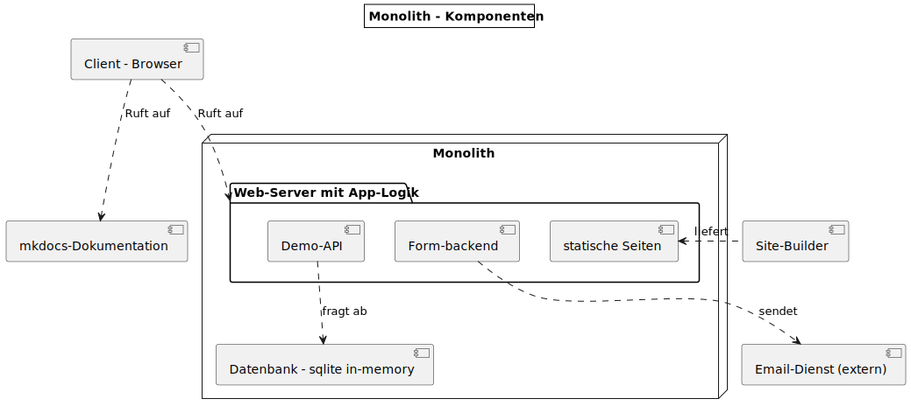
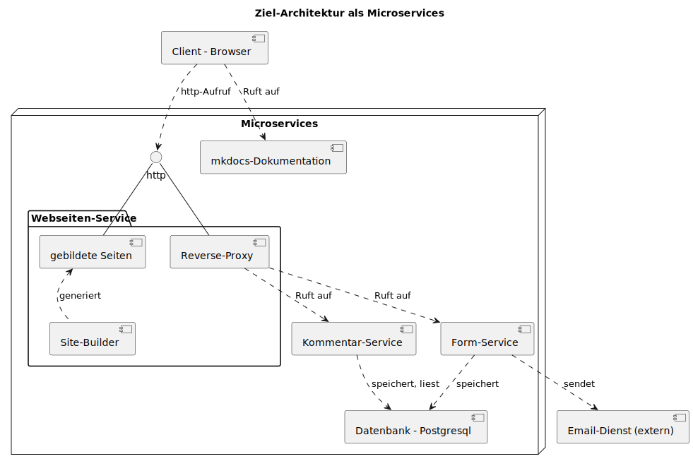

{% extends "../_base_template.html" %}
{% block title %}Lektion 1 - Willkommen{% endblock %}

{% block sections %}
<section data-markdown>
<textarea data-template>
<i class="fas fa-graduation-cap"></i> M347 - Dienste mit Containern
=============================

Heutiges Ziel
--------------

* Sie wissen, was wir in diesem Modul / Semester tun
* Sie kennen die Aufgabenstellung der Projektarbeit
* Sie haben eine lauffähige Entwicklungsumgebung, und das Projekt-Skelett funktioniert

</textarea>
</section>

<section data-markdown>
<textarea data-template>
<i class="fas fa-graduation-cap"></i> M347 - Dienste mit Containern
=============================

Thema &amp; Jahresplan
--------------

**Thema**:

* Wie beschäftigen uns mit dem Konzept **"Linux-Container"**:
* Sie kennen die Grundkonzepte von Linux-Container-Anwendungen
* Sie können selber Container erstellen
* Sie können bestehende Applikationen in Container-Anwendungen überführen


**Jahresplan**:

Siehe Moodle
</textarea>
</section>

<section data-markdown>
<textarea data-template>
<i class="fas fa-graduation-cap"></i> M347 - LBV und Erwartungen, Hausaufgaben
=============================

## LBV - M347 - 1:

* 1 Wissensprüfung 40%
* 1 kurze Projektarbeit 60%

Daten und Bewertung siehe Moodle

## Erwartungen und Hausaufgaben

* Als **Hausaufgaben** ist jeweils das Fertigstellen der Aufgabe aus dem Unterricht zu verstehen
* Wir **bauen auf den letzten Lektionen auf**: Ich erwarte daher von Ihnen:
  * dass Sie die Aufgaben vom Unterricht bis zur nächsten Lektion **ausserhalb des Unterrichts** fertigstellen
  * dass Sie **Fragen vorbereiten**, oder mir via Teams/Mail stellen, wenn Sie nicht weiterkommen
* Es werden keine Hausaufgaben bewertet. Es liegt an Ihnen, diese wie beschrieben zu machen.

</textarea>
</section>

<section data-markdown>
<textarea data-template>
# <i class="fas fa-graduation-cap"></i> M347 - Dienste mit Containern

## Projektarbeit

Wir bauen dazu eine **monolithische** Beispiel-Applikation zu mehreren Einzeldiensten,
so genannten **Microservices**, um.

Dies werden wir im Laufe des Semesters schrittweise tun, im Rahmen eines übergreifenden Projektes, welches
Sie am Schluss als "Gesamtpaket" als Projektarbeit abliefern.

## Ziel des Gesamtprojektes

Wir bauen auf Ihrem **Webseiten-Projekt aus dem Modul M293** auf: Ziel ist, von einer monolithischen Architektur zu einer
Container-Microservice-Architektur zu gelangen:

<div style="display: flex;gap:5px;align-items: center;">
  
  ==>
  
</div>

Sie liefern den gesamten Code in einem **github Classroom-Repository** ab.


</textarea>
</section>

<section data-markdown>
<textarea data-template>
# <i class="fas fa-graduation-cap"></i> M347 - Dienste mit Containern

## Benötigte Software für den Unterricht

Sie benötigen eine lauffäige **Docker**-Installation auf Ihrem Rechner, sowie eine **Entwicklungsumgebung** und einen **GIT-Client**.

Software | Details
---------|---------
**Docker Desktop** inkl. `docker compose` | Installationsanleitung unter: <https://docs.docker.com/desktop/install/windows-install/>
**Visual Studio Code** | <https://code.visualstudio.com/Download>
**VS Code Plugins** | Markdown All In One (empfohlen)
**GIT-Client** | VS-Code, oder SourceTree: <https://www.sourcetreeapp.com/>

Die restlichen Applikationen installieren wir uns im Verlauf des Moduls als Docker-Images (bsp: Datenbank-Client)

## Github Classroom Repository

Sie erhalten ein Github Repository über Github Classroom. Dazu benötigen Sie ein **Github Login**: <https://github.com/signup>

Danach können Sie sich im Classroom-Repo registrieren: <https://classroom.github.com/a/kMtz3BEb>

</textarea>
</section>

<section data-markdown>
<textarea data-template>
<i class="fas fa-graduation-cap"></i> M347 - Setup
=============================

* Erstellen und Klonen des github-Classroom-Repositories: <https://classroom.github.com/a/kMtz3BEb>
* Konfigurieren der Github-Credentials: Personal Access Token, <https://github.com/settings/tokens>
* Starten des Monolith-Projektes als Docker-Container:

```sh
# unter Windows Powershell:
shell > cd /pfad/zum/projekt/monolith
shell > docker run --rm -ti -v "${pwd}":/app -w /app -p 3000:3000 node:16 bash

docker> npm install
docker> npm run build
docker> node server.js
```

Sie sollten nun <http://localhost:3000/> aufrufen können, und eine Demo-Webseite sehen.

</textarea>
</section>

<section data-markdown>
<textarea data-template>
# <i class="fas fa-graduation-cap"></i> Repository-Struktur

```text
.
├── README.md
├── mkdocs                    # Haupt-Verzeichnis der mkdocs-Dokumentations-Site
│   ├── docs                  # Markdown-Dokumentation (Sourcen)
│   ├── mkdocs.yml            # mkdocs-Konfigurationsdatei
│   └── site                  # gebildete / kompilierte statische Dok-Files
└── monolith                  # Die Demo-Monolith-Applikation
    ├── config                # Website-Build-System: Konfiguration
    ├── gulpfile.js           # Website-Build-System: Build-Tasks
    ├── package.json
    ├── server.js             # Die Monolith-Server-Applikation
    ├── site                  # Hier kommt Ihre statische Webseite rein
    └── src                   # Webseiten-Templates, falls genutzt
```
</textarea>
</section>

<section data-markdown>
<textarea data-template>
# <i class="fas fa-graduation-cap"></i> Funktionsweise des Skelett-Projektes

Sie haben eine kleine, monolithische Web-Applikation "vor sich":

<div style="display: flex;gap:5px;align-items: flex-start;">
  
  <div>
    
* Auf TCP Port 3000 hört ein **NodeJS-Server** auf Ihre Anfragen
* Diese **Node-ExpressJS-Applikation** stellt eine monolithische Applikation dar:
  * sie liefert statische Web-Dateien aus (alles unter `site/`)
  * sie implementiert eine Demo-**Backend-API** (`/api/`-URLs)
  * sie implementiert ein **Formular-Backend** (`/feeback`-URL)
  * sie löst ein Email aus bei Formularversand

* **Ziel** dieses Semesters ist, dass wir diese Applikation in kleinere **Micro-Services** auseinanernehmen.
  </div>
</div>

Sie können die monolithische Demo-App jederzeit mittels Docker wieder starten:

```sh
# wie bisher, mittels Shell, dann manuell starten (Empfiehlt sich während Entwicklung)
shell > cd /pfad/zum/projekt/monolith
shell > docker run --rm -ti -v "${pwd}":/app -w /app -p 3000:3000 node:16 bash
docker> node server.js

# Oder Sie starten direkt die server.js-Applikation:
shell > cd /pfad/zum/projekt/monolith
shell > docker run --rm -ti -v "${pwd}":/app -w /app -p 3000:3000 node:16 node server.js
```
</textarea>
</section>

<section data-markdown>
<textarea data-template>
# <i class="fas fa-graduation-cap"></i> Funktionsweise des Skelett-Projektes

Die **Infrastruktur** des Skelett-Projektes kennen Sie bereits aus M293: Wir verwenden dieselbe **Toolchain**:

* Der Ordner **"monolith/src/"** beinhaltet Ihre Webseiten (-Vorlagen) und -Templates
* Der Befehl **`npm run build`** erstellt aus den Vorlagen fertige statische Webseiten in **"monolith/site"**
* Der Befehl **`node server.js`** startet einen kleinen Webserver, der Ihre statische Seite unter "monolith/site" ausliefert.

<i class="far fa-hand-point-right"></i> Kopieren Sie Ihre statische Webseite vom Modul M293 in den **src/**-Folder und probieren Sie dies aus!


</textarea>
</section>

{% endblock %}
